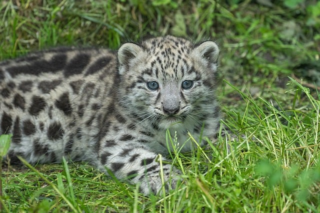

Wildlife rescue
Responding with care when animals need a second chance.
Learn moreAnimal Preservation Centre
We protect vulnerable species across the Americas through hands-on conservation, rescue, and community action.
Meet our team Explore our programsConservation in action
From habitat patrols to species rescue, our work turns local care into lasting protection.
Every healthy habitat is a promise kept to the animals that call it home.
Featured species
Take in Costa Rica's lush landscapes and remarkable wildlife in immersive 4K Ultra HD footage, captured at 60 frames per second.
Animals rescued
Habitats protected
Trees planted
Community members
Demonstration figures for this student project, ready to replace with verified APC data.
What we do
Responding with care when animals need a second chance.
Learn moreKeeping forests, coastlines, and corridors healthy.
Learn moreGrowing solutions with the people closest to the land.
Learn moreTurning careful observation into better decisions.
Learn more
Conservation story
Behind every successful return is a chain of patient decisions: a safe response, specialist care, and a habitat ready to welcome wildlife home.
Field notes: Americas region · 2025 demonstration story
Read the full storyStand with wildlife
Your time, voice, and support help turn conservation from an ambition into daily practice.
DonateVolunteerAdopt an animal